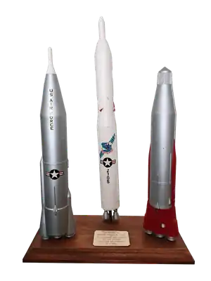
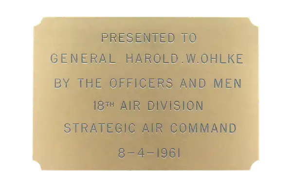
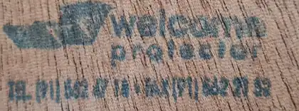

Names General Harold W. Ohlke, the 18th Air Division, Strategic Air Command, and 8-4-1961.

A named Ohlke artifact from the Strategic Air Command era
1961 Strategic Air Command Presentation Display to Brigadier General Harold W. Ohlke
Three painted plastic missile display models with applied decals, mounted on a finished wooden plinth and engraved as presented by the Officers and Men of the 18th Air Division, Strategic Air Command.
Why this matters
For an Ohlke family member, researcher, or Cold War collector, the name is the value driver.
The display is not being presented as a generic model set. Its importance comes from the engraved plaque, which names General Harold W. Ohlke, the 18th Air Division, Strategic Air Command, and the date 8-4-1961, read in U.S. format as 4 August 1961.
The official U.S. Air Force biography confirms Harold W. Ohlke as a career Air Force officer and commander of the 18th Strategic Aerospace Division at Fairchild Air Force Base, Washington. The plaque preserves the earlier 18th Air Division wording used immediately before the February 1962 redesignation.
Acquired in June 2026 from a UK toy and collectables shop, where it was clearly out of place. The object itself carries the named attribution.
Proof trail
What can be shown now
The U.S. Air Force biography confirms Ohlke's senior command role and Fairchild AFB association.
Three plastic display missiles with decals mounted on metal tube supports over a finished wooden base.
The underside stamp reads "Welcome Protector"; the lower line is not relied upon as provenance.
Photographic record
Display, plaque, and underside marking


Measured details
Known specifications
The models are plastic with decals. The supports are narrow metal tubes mounted into the wooden plinth. The piece is boxed and ready for specialist inspection, with weight to be supplied.
Wooden base
34 cm length, 16 cm width, 3 cm height.
Supports
Three support positions. First and second use one 5.5 cm tube; third uses two 5.5 cm tubes.
Safety
Decorative display only. Inert, non-functional, and not ordnance.
Model notes
Three defining U.S. missiles, precisely identified
This presentation brings together three unmistakable General Dynamics contractor models from the formative era of America's intercontinental ballistic missile force: the SM-68 Titan, SM-65 Atlas, and SM-65B Atlas. Their distinctive profiles, finishes, markings, and engine arrangements establish each identification.
- SM-68 Titan (white)45.5 cm high, with a 4 cm circular base. The tallest model in the group, finished in white and carrying Strategic Air Command and U.S. Air Force insignia.
- SM-65 Atlas (silver and white)39 cm high, approximately 8 cm x 5 cm in section. Silver airframe with a white nose section, U.S. Air Force lettering, national insignia, and the Atlas three-engine configuration.
- SM-65B Atlas (silver and red)36 cm high, approximately 8 cm x 5 cm in section. Silver body with a red booster skirt and the distinctive SM-65B nose and engine arrangement.
Market context
A rare named Ohlke/SAC display documented for reference.
The presentation is shown for Ohlke families, Cold War collectors, USAF/SAC specialists, researchers, and militaria specialists. The object, its measurements, provenance evidence, and comparable auction records are presented together on this page.
References
Source links
The plaque is the primary evidence. These links support the named recipient and market context.